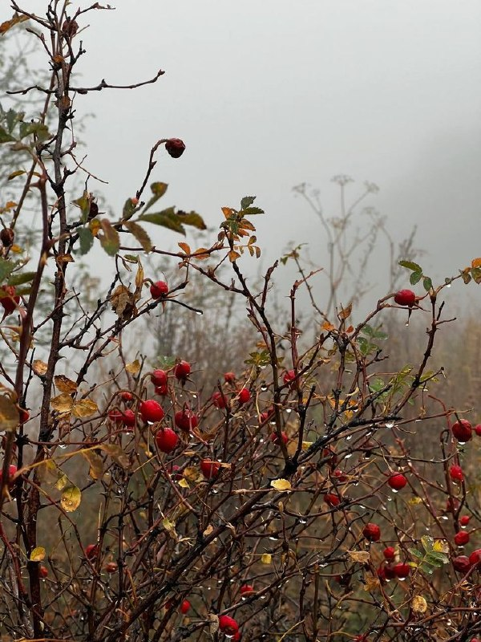
01
Общество и городская среда · событие дня

XX век стал временем крушения империй, мировых и локальных войн, космической гонки и тихой жизни обычных людей.…

Конституционный суд признал указ противоречащим действовавшей Конституции. Верховный Совет отказался подчиниться, а Александр Руцкой был провозглашён и.о. президента. Белый дом стал центром сопротивления.…

Компромат Ульяновск ⚠️ «Ленинские горки» зависли: снос отложили , мэрия требует экспертизу Арбитраж Ульяновской области поставил на паузу разборки вокруг сноса горнолыжного комплекса «Ленинские горки».……

Сергей Ермаков рассказал, что планирует дожить до ста лет, потому что обещал это своей маме.…
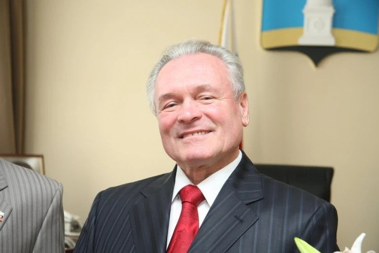
На торжественном мероприятии, которое состоялось в Губернаторском лицее № 101, глава города Александр Болдакин поблагодарил их за большой вклад в обучение и воспитание подрастающего поколения.…
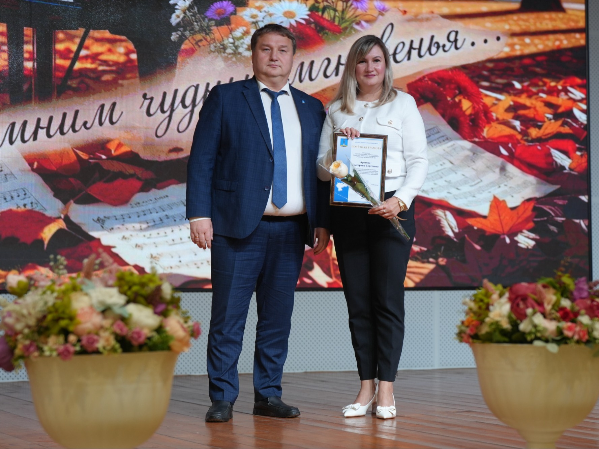
Миллионы людей сделали выбор, который определил их судьбу: они вернулись домой, к исторической семье, обрели право говорить на родном языке и строить будущее своих детей уже в России.…
Он заставил развернуться всех четырех наставников — Гагарину, Гарифуллину…

По мнению депутата, эти меры помогут закрыть дефицит бюджета без дополнительной нагрузки на россиян.
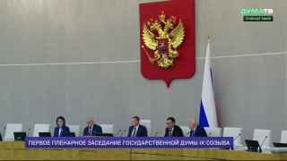
▪️ Прекратить давать в долг на строительство другим странам. ▪️ Перенести налоговую нагрузку на иностранцев.…
Этот порог предлагают снизить до 10%, а на остальную часть должна выдаваться субсидия.
Также с 2027 года Минфин предложил включить проценты по вкладам в основную прогрессивную шкалу НДФЛ: 13% — до 2,4 млн рублей в год; 15% — от 2,4 до 5 млн рублей; 18% — от 5 до 20 млн рублей; 20% — от 20 до 50 млн рублей; 22% — с суммы свыше 50 млн рублей.…

попала под льготный утильсбор. Цена авто составит от 7 млн рублей, пишет Autonews.


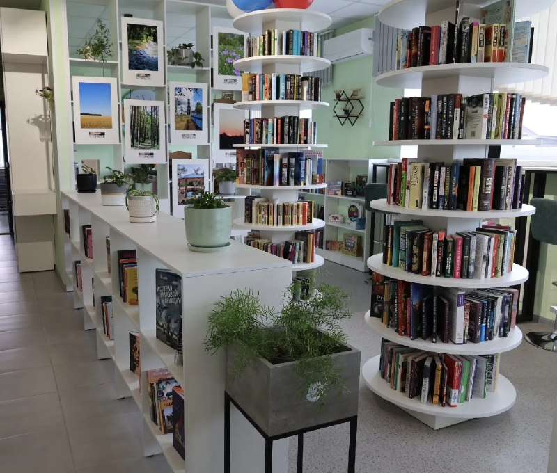
Такой доход можно получить, если в течение года на вкладе находилось более 1,2 млн рублей.
Ранее стало известно о смерти 28-летней жительницы Иркутской области от чумы.…
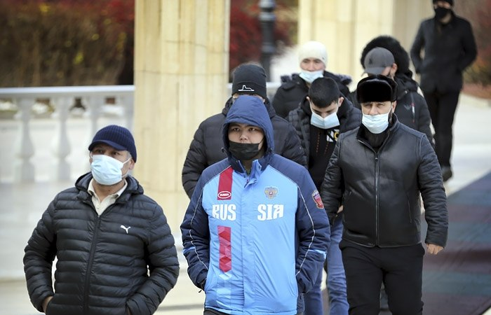
Звезды уже раздали свои указания: ♈️ Овнам придется искать компромиссы в бизнесе.…
Цель проекта «Эстафета Успешности» — помочь людям с инвалидностью профессионально реализоваться, стать финансово самостоятельными и интегрироваться в экономику.……
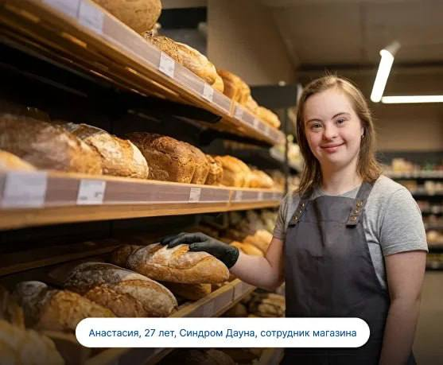
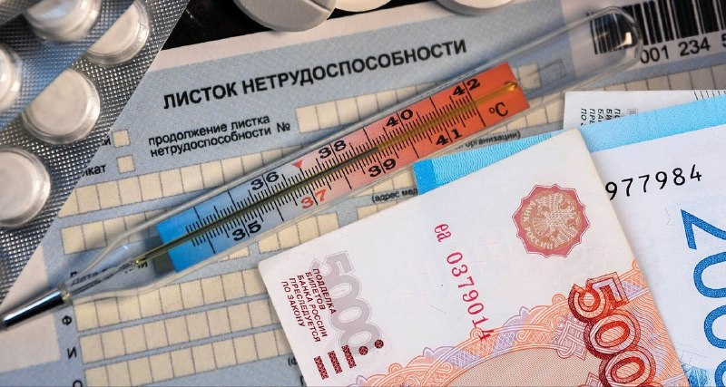
После доклинических испытаний фильтры уже начали ставить пациентам.…
Весь район остался без травмпункта! А если человеку плохо, то что?…

Диспансеризация — это ваш шанс найти их на самой ранней стадии, когда лечение проходит быстро и успешно.…

Устройство защищает от тромбоэмболии, а затем самостоятельно рассасывается в организме.…

Программа автоматически направит водителю уведомление на Госуслуги, после чего у него будет ровно три месяца на внеочередную медкомиссию — иначе права аннулируют.……
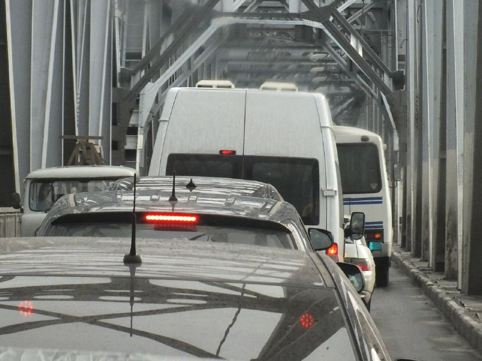
Эндоваскулярный хирург Ульяновской областной клинической больницы Леонид Глущенко несколько лет участвовал в разработке биодеградируемого кава-фильтра — устройства, которое после выполнения своей защитной функции должно самостоятельно рассасываться в организме человека.…
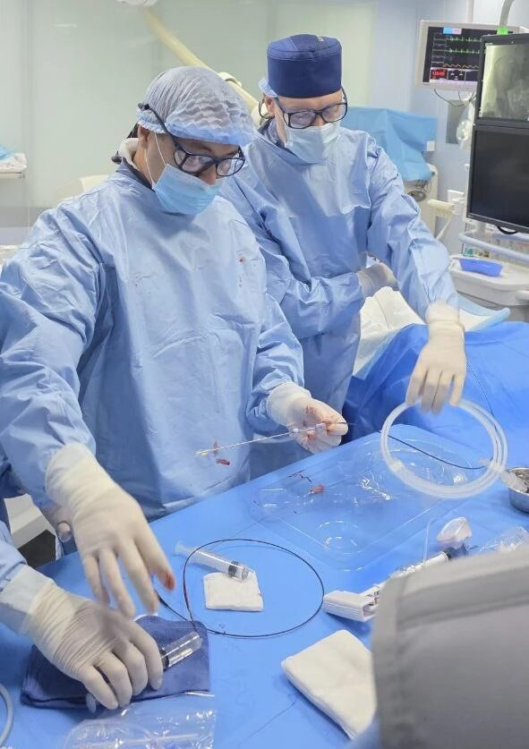
Врачи рекомендуют вакцинироваться до сезонного подъёма заболеваемости: после прививки организму требуется от двух до четырёх недель, чтобы сформировать защиту, сообщили в региональном Минздраве.…
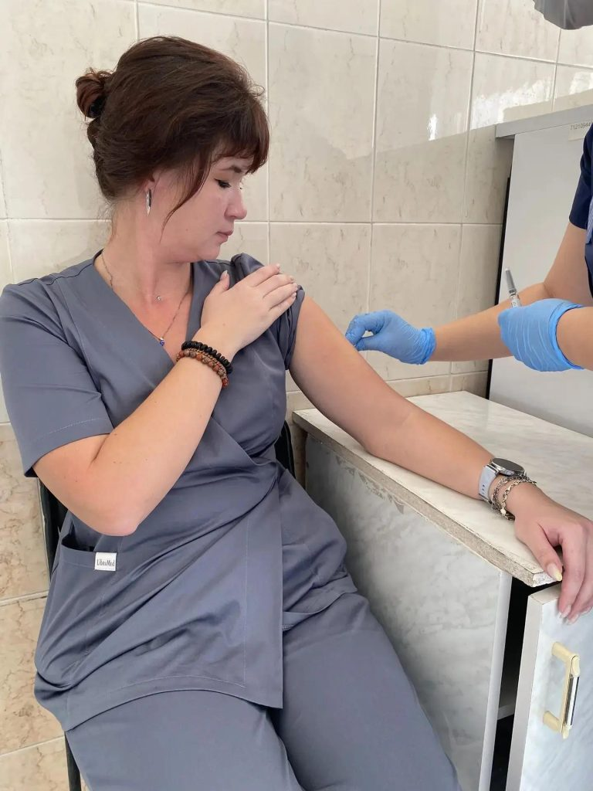
В ночь на 2 октября в Шелеховской районной больнице скончалась 28-летняя женщина.…
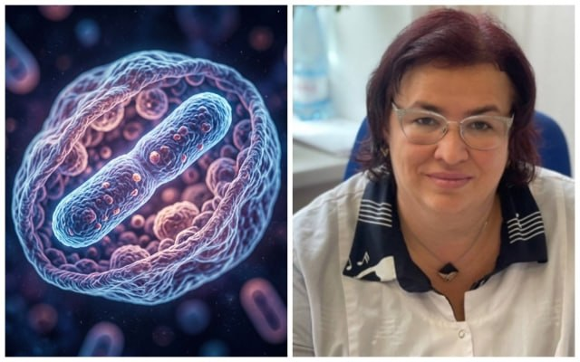
В 2026 году ветеринарная служба Ульяновской области проводит бесплатную стерилизацию и чипирование собак.…
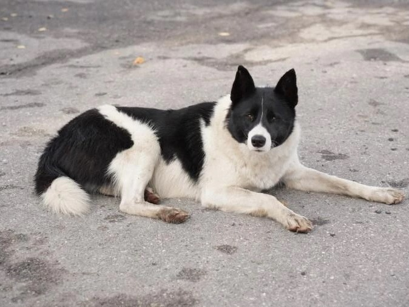
Несколько советов по здоровому образу жизни нам дала исполняющая обязанности главного врача Центра общественного здоровья, врач-терапевт Лилия Кирилина.…


Согласно календарю соревнований, проведение матчей этого тура запланировано на 5 декабря, однако «Велес» и «Волга» договорились о переносе игры на 4 октября.…


Следующий матч ульяновцы пройдет 10 октября в Волгограде против «Ротора».…

Отличная возможность показать силу духа, отточенную технику и волю к победе.…

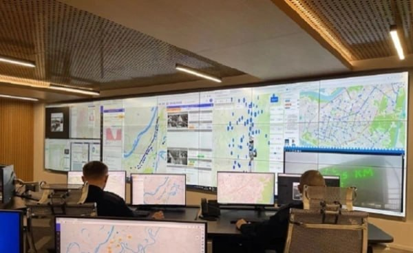
В Москве 28–29 сентября прошли XI форум и выставка «Интеллектуальные транспортные системы России».…

Кира также достойно проявила себя на Всероссийском турнире в Казани — продемонстрировала хорошую технику, характер и уверенную игру.…
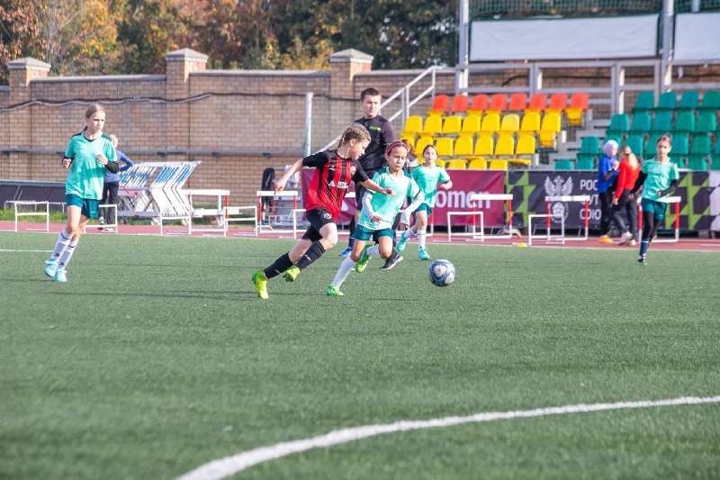
Поджигает не только днем, но и ночью, приходится ставить будильник и проверять горим или нет. Обращались в полицию — ничего не решилось. Проводили максимум обход по жильцам.…

Обстоятельства и площадь возгорания уточняются. Подробности происшествия станут известны позже.…


Важно знать: настоящие сотрудники военкоматов не звонят с такими просьбами.…
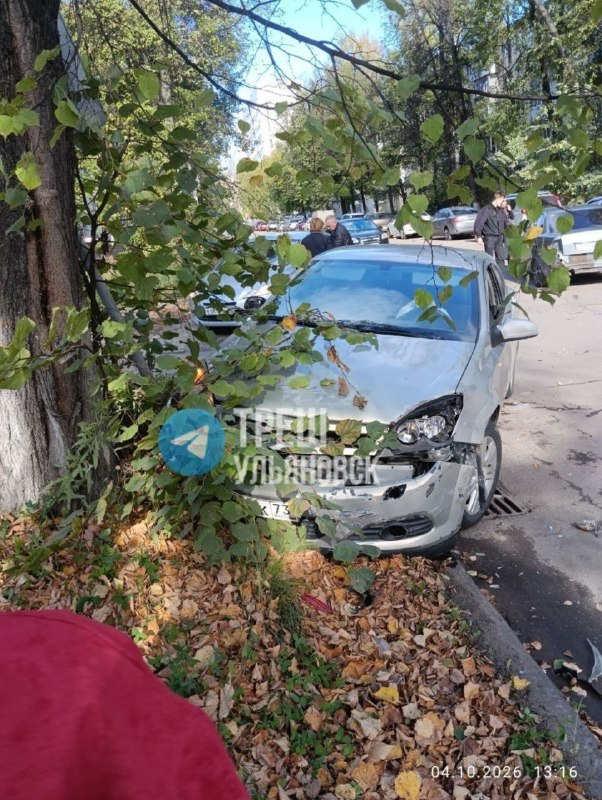
Потом разъехались — и тут потерпевшему начинают капать уведомления о долге, сообщает полиция.…
Подозреваемого задержали, он признал вину и сказал, что потратил средства на себя. Возбуждено уголовное дело о мошенничестве.

Аккуратно срежьте корочки с хлеба и раскатайте каждый ломтик скалкой. 2. На край положите ломтик ветчины и немного тертого сыра. Сверните в плотную трубочку. 3. В миске взбейте яйцо с молоком. 4.…
По словам аграриев, овощи из Азербайджана, Армении, Таджикистана и других стран стоят примерно в 2,5 раза дешевле российских, из-за чего местные компании не выдерживают конкуренцию.…

Мир не может просто наблюдать и ждать, мы призываем партнеров к решительной реакции — заявление Главы МИД…
Обычные металлические фильтры после использования приходится удалять хирургически.…


– Поезд № 6713 будет отправляться от станции «Ульяновск-Центральный» в 8.41 и прибывать на станцию «Инза» в 12.14.…


Уважаемые учителя, работники и ветераны педагогического труда! Примите самые сердечные поздравления с вашим профессиональным праздником - Днём учителя в России!
Обычно эту фразу связывают с реакцией на запуск первого искусственного спутника Земли в 1957 году — событие действительно сильно встревожило США и подтолкнуло к размышлениям о том, какие элементы советской системы образования стоит перенять.…


Трогает до глубины души ❤ «В начале учебного года классная руководительница шестого класса стояла перед своими бывшими пятиклассниками.…


Почему мальчишка, выросший в семье педагогов и мечтавший о карьере летчика, стал прокурором, за что получил государственную награду, какие детские увлечения забросил, а какие сохранил, юбиляр рассказал ulpravda.ru.…


XX век стал временем крушения империй, мировых и локальных войн, космической гонки и тихой жизни обычных людей.…
Более 50 живописных и графических работ Аркадия и Николая Пластовых, а также Елены Холодилиной.…

Кроме того, сотрудники госпиталя, находящиеся на заслуженном отдыхе, приняли участие в городском торжестве.
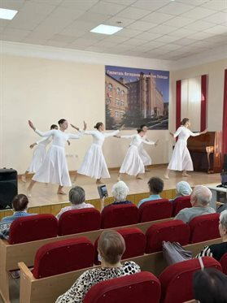
30 сентября в Павловке после модернизации в рамках национального проекта «Семья» состоялась церемония открытия библиотеки нового поколения.…
Архивная комиссия разработала программу юбилейных торжеств.…
| Тема | Завтра | Ожидание | Уверенность |
|---|---|---|---|
| Губернатор / власть | ↓ спад | ~16.3 упоминаний | средняя |
| Суды и криминал | ↓ спад | ~7.0 упоминаний | средняя |
| БПЛА и воздушные угрозы | ↓ спад | ~2.2 упоминаний | средняя |
| Транспорт и дороги | ↓ спад | ~31.1 упоминаний | средняя |
| Спорт | ↓ спад | ~9.1 упоминаний | средняя |
| Городская среда | ↓ спад | ~6.5 упоминаний | высокая |